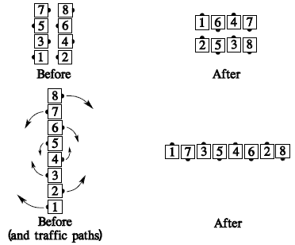
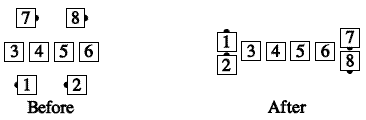

From any formation with no dancers facing directly toward or away from the flagpole center: Each dancer moves forward the designated number of quarters (1/4 unless otherwise specified) around the flagpole center of the formation, staying the same distance from that center as though he were on a wheel turning about that center. With each quarter he Counter Rotates, the dancer faces a new wall (i.e., he turns 90°).

The original outsides always finish as outsides, and the original centers always finish as centers. For example, "Points Counter Rotate 1/4":

Teaching Hint: From parallel waves, people tend to try to Split Counter Rotate. Describing the action, from that formation only, as "Concentric Box Counter Rotate" helps a great deal.
© Copyright 1983, 1986-1988, 1995-2012 Bill Davis, John Sybalsky and CALLERLAB Inc., The International Association of Square Dance Callers. Permission to reprint, republish, and create derivative works without royalty is hereby granted, provided this notice appears. Publication on the Internet of derivative works without royalty is hereby granted provided this notice appears. Permission to quote parts or all of this document without royalty is hereby granted, provided this notice is included. Information contained herein shall not be changed nor revised in any derivation or publication.